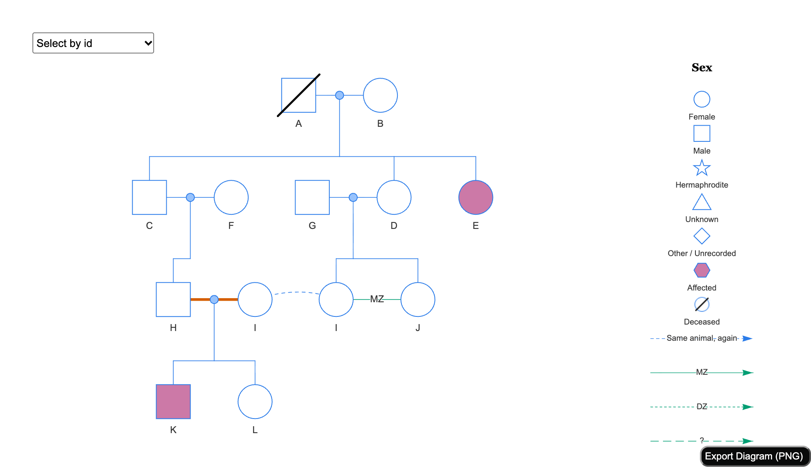

pedkindraw draws pedigrees as interactive graphs and computes kinship. The drawing joins each offspring to the mating of its sire and dam, and marks what the records say about each animal: its sex, whether it has died, up to four conditions, its twin, and a mating between relatives. It is made from a script and opens in a web browser, the RStudio viewer or an R Markdown page, where it can be zoomed, searched by id and saved as a PNG picture. The package also checks pedigree records, trims and shrinks pedigrees, finds sets of unrelated genotyped animals, and converts kinship2 and Pedixplorer pedigree objects. It does much of what kinship2 does, and carries the pedigree drawing of nprcgenekeepr.
The package’s website, https://rmsharp.github.io/pedkindraw/, has every help page and two articles: Getting started and Drawing pedigrees.
Installation
pedkindraw is not on CRAN yet. Install it from GitHub:
install.packages("pak")
pak::pak("rmsharp/pedkindraw")Example
A pedigree is a data frame with one row per animal: its id, sire, dam and sex ("M", "F", "H" or "U"), and optionally a status ("DECEASED" marks an animal that has died) and condition columns, whose names start with affected. Twins are listed in a table of their own.
library(pedkindraw)
## Twelve animals in four generations. A has died; E and K have a
## condition; I and J are identical (MZ) twins; and H and I, first
## cousins, are mated.
ped <- data.frame(
id = c("A", "B", "C", "D", "E", "F", "G", "H", "I", "J", "K", "L"),
sire = c(NA, NA, "A", "A", "A", NA, NA, "C", "G", "G", "H", "H"),
dam = c(NA, NA, "B", "B", "B", NA, NA, "F", "D", "D", "I", "I"),
sex = c("M", "F", "M", "F", "F", "F", "M", "M", "F", "F", "M", "F"),
status = c("DECEASED", rep("ALIVE", 11)),
affected = c(FALSE, FALSE, FALSE, FALSE, TRUE, FALSE,
FALSE, FALSE, FALSE, FALSE, TRUE, FALSE)
)
twins <- data.frame(id1 = "I", id2 = "J", code = "MZ twin")checkPedigree() lists each problem it finds, one row per problem, and finds none here. findGeneration() numbers the generations, which the layout and kinship() need.
checkPedigree(ped)
#> [1] check id detail
#> <0 rows> (or 0-length row.names)
twins <- checkTwinRelations(ped, twins)
ped$gen <- findGeneration(ped$id, ped$sire, ped$dam)
k <- kinship(ped$id, ped$sire, ped$dam, ped$gen, twinRelations = twins)
k[c("H", "I", "J", "K"), c("H", "I", "J", "K")]
#> H I J K
#> H 0.50000 0.06250 0.06250 0.28125
#> I 0.06250 0.50000 0.50000 0.28125
#> J 0.06250 0.50000 0.50000 0.28125
#> K 0.28125 0.28125 0.28125 0.53125The kinship coefficient of H and I is 0.0625, that of first cousins. The identical twins I and J have 0.5, as each has with itself. K, an offspring of H and I, is inbred: its coefficient with itself is (1 + 0.0625) / 2 = 0.53125.
pedkindraw’s kinship() takes id, sire, dam and pdepth, the generation numbers. kinship2 and Pedixplorer each export a kinship() too, which takes a pedigree object or the vectors id, dadid, momid and sex; called that way, with sex codes 4th, pedkindraw’s stops whenever a sire’s or dam’s code is not below its offspring’s. kinship2 also exports bitSize(), findAvailAffected(), findAvailNonInform(), findUnavailable() and ibdMatrix(). With both packages attached, name the package: pedkindraw::kinship().
layout <- makePedigreeMatingLayout(ped, twinRelations = twins)
diagram <- drawPedigreeDiagram(layout)Print diagram to see the drawing, or save it as a web page with htmlwidgets::saveWidget(diagram, "pedigree.html"). This is a picture of it:

Squares are males and circles females. The slash marks A as dead, and the filled symbols are E and K, which have the condition. The green line labelled MZ joins the twins I and J. The mating of the first cousins H and I is drawn in orange, because their kinship coefficient is above 0. I is drawn twice, under her sire and dam beside her twin, and beside her mate H; the dashed line joins her two places. In the drawing itself you can zoom, hover over an animal to highlight the animals joined to it, pick an animal in the “Select by id” box, and save the picture with the “Export Diagram (PNG)” button.
What it does
Drawing
-
makePedigreeMatingLayout()places each animal and each mating of a pedigree. It takes a twins table, a kinship matrix and layout hints: the left-to-right order of animals, and the side of a mating each mate is drawn on. -
drawPedigreeDiagram()draws a layout as an interactive visNetwork graph. -
makePedigreeDiagramData()makes a simpler drawing’s nodes and edges: one node per animal, positioned by generation, and an edge from each sire and dam to its offspring.
Kinship and relatedness
-
kinship()computes the kinship matrix, dense or sparse; identical twins get the kinship of an animal with itself. -
ibdMatrix()builds an IBD matrix from pairs of ids and their values. -
findUnrelated()finds a set of unrelated genotyped animals.
Pedigree structure
-
findGeneration()andfindPedigreeNumber()number each animal’s generation and family tree;familyCheck()checks family ids against the family trees the sires and dams form. -
getParents(),getOffspring(),getFounders()andisFounder()find sires and dams, offspring and founders;hasBothParents()tells whether an animal has both, andgetIdsWithOneParent()finds the animals with one. -
countOffspring()counts each animal’s offspring;getMatings()lists the matings, each sire and dam with their number of offspring together.
Checking and repair
-
checkPedigree()lists each problem in a pedigree and changes nothing;checkTwinRelations()checks a twins table. -
recodePedigree()rewrites other ways of writing an unknown parent (0, empty) or a sex (1and2,maleandfemale) into pedkindraw’s codes. -
addParents()adds a row for each sire or dam that has none;correctParentSex()sets the sex of an animal listed as a sire or dam;addBackSecondParents()adds back to a trimmed pedigree the known parent of each animal with only one.
Trimming and shrinking
-
trimPedigree()trims a pedigree to a group’s ancestors;getProbandPedigree()reduces it to probands and their ancestors, andgetDescendantPedigree()to a group and its descendants. -
removeUnknownAnimals()removes the placeholder animals added for unknown parents;removeUninformativeFounders()removes founders that appear only once, which add no information. -
removeAnimals()removes the animals you list and clears each sire or dam entry that named one of them; their offspring keep their other parent. -
shrinkPedigree()shrinks a pedigree to fit a bit-size budget. Its steps are exported too:bitSize()measures a pedigree,findUnavailable()finds the animals it can lose because they are unavailable,findAvailNonInform()the genotyped animals that add no information, andfindAvailAffected()removes the one genotyped animal of a given affected status whose removal shrinks it most.
Converting kinship2 and Pedixplorer objects
asPedFrame() converts a kinship2 pedigree or pedigreeList and a Pedixplorer Pedigree to the data frames above: the pedigree, its twins table and its layout hints.
p <- kinship2::pedigree(
id = c("A", "B", "C", "D"),
dadid = c(NA, NA, "A", "A"),
momid = c(NA, NA, "B", "B"),
sex = c("male", "female", "male", "female"),
affected = c(0, 0, 1, 0),
status = c(1, 0, 0, 0),
relation = data.frame(id1 = "C", id2 = "D", code = 2)
)
x <- asPedFrame(p)
x$ped
#> id sire dam sex affected status
#> 1 A <NA> <NA> M 0 DECEASED
#> 2 B <NA> <NA> F 0 ALIVE
#> 3 C A B M 1 ALIVE
#> 4 D A B F 0 ALIVE
x$twinRelations
#> id1 id2 code
#> 1 C D DZ twinpedkindraw and nprcgenekeepr
pedkindraw began as a copy of the pedigree code of nprcgenekeepr, a package of genetic tools for colony management, at its commit baef1e12c; nprcgenekeepr was not changed. Each copied file names its source and that commit, and DIVERGENCE.md says where and why pedkindraw’s copy now differs. checkPedigree(), findUnrelated(), familyCheck(), ibdMatrix(), asPedFrame(), the layout hints and the exported steps of shrinkPedigree() were written for pedkindraw.